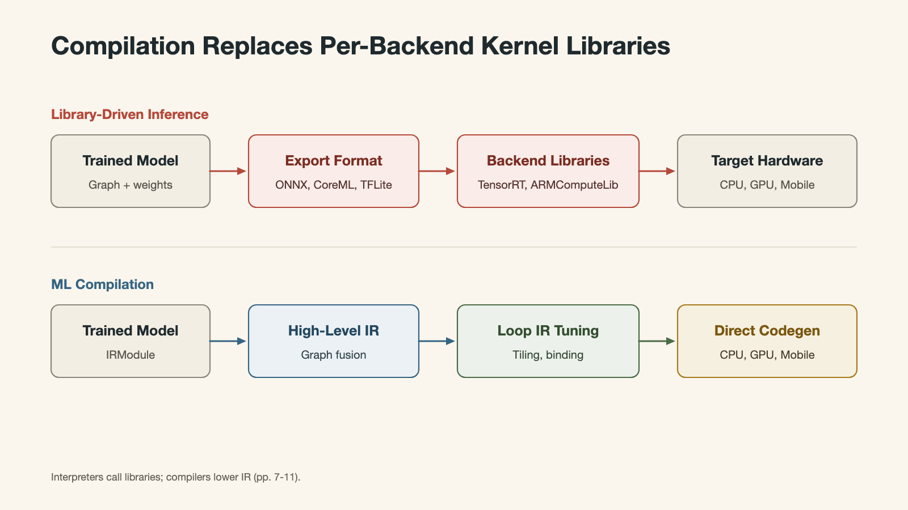
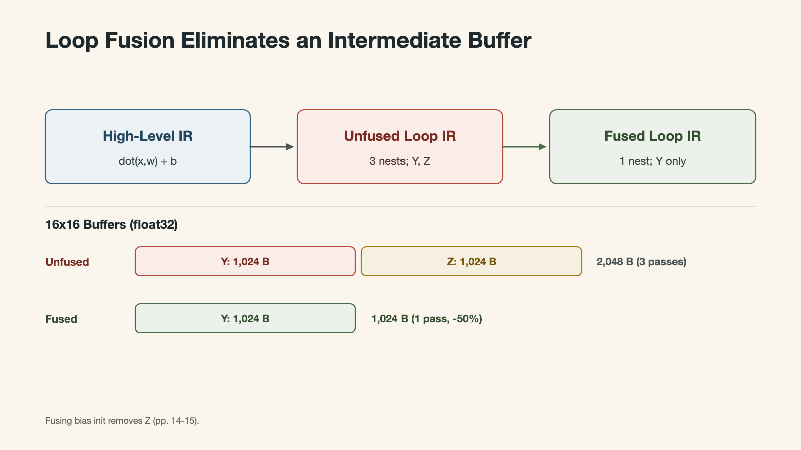
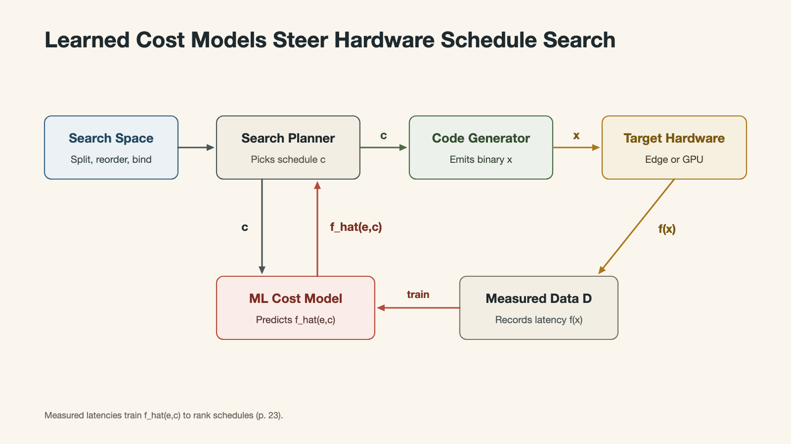

Lowering Models from Graphs to Hardware Schedules
CMU DLSys Lecture 23: Model Deployment
Training a model in Python on a workstation GPU is only half of the systems problem. Once weights converge, deployment moves that model out of a Python training loop and onto servers, mobile phones, and edge boards that impose tight memory budgets, omit Python runtimes, and rely on diverse accelerators (slides, pp. 4–6).
CMU’s Fall 2026 Lecture 23 slides (Model Deployment, Tianqi Chen and Tim Dettmers; 25 pp., paired on the course schedule with the linked 2022 lecture recording, 42 min 53 sec) trace the architectural shift from library-driven inference engines to machine learning compilation. Instead of writing specialized operator libraries for every accelerator, an ML compiler places high-level computation graphs and low-level loop nests inside one intermediate representation (IRModule), transforms loops systematically, and uses hardware measurements to train a cost model that guides schedule search.

Linked 2022 course recording (Video (2022 version) on the official schedule); equation and slide page citations below refer to the Fall 2026 PDF deck.
Why deployment leaves Python behind
Across earlier lectures, Needle trained Transformers, ResNets, and LSTMs on standard GPU environments using automatic differentiation and optimization (slides, pp. 4–5). Shipping a trained model into production changes three constraints (slides, p. 6):
- Runtime restrictions: Edge and mobile environments restrict model footprint and frequently disallow a Python runtime (
no-python). - Local hardware acceleration: Target devices expose heterogeneous compute units—mobile GPUs, accelerated CPU vector instructions, and NPUs—rather than uniform server GPUs.
- Application integration: Inference sits inside a larger pipeline alongside data preprocessing and postprocessing.
To cross from training to device execution, the conventional path exports the computation graph and learned weights (input -> linear(w_1) -> relu -> linear(w_2) -> softmax) into an interchange format such as ONNX, CoreML, or TFLite, then hands that graph to backend inference frameworks such as TensorRT, ARMComputeLib, TFLite, or CoreML (slides, p. 7).
How inference interpreters work—and where they stall
Inside many inference engines, execution still follows a computational graph interpreter pattern (slides, p. 8):
- Allocate memory buffers for intermediate activations between graph nodes.
- Traverse the computation graph and dispatch each operator one by one.
- Support only a fixed catalog of operators and limited programming dynamism (such as data-dependent control flow).
That design hits an engineering scaling wall (slides, p. 10). Every new hardware backend needs its own specialized operator library, and achieving high utilization requires hand-tuning kernels across each combination of operator, tensor shape, and device.
Machine learning compilation and the IRModule
Machine learning compilation replaces per-backend operator catalogs with a multi-level lowering pipeline from ML models through high-level IR optimizations and transformations, then tensor operator-level optimization, down to direct code generation across CPUs, GPUs, phones, edge boards, and clusters (slides, p. 11).
The central compiler abstraction is an IRModule: a collection of interdependent functions representing the entire model at multiple levels of detail (slides, p. 12). On slide 12, one IRModule holds two functions side by side:
@model(x, w, b), a high-level graph function that passes(x, w, b)into a call node@dot-addand sends its output tosoftmax.@dot-add(x, w, b), a sub-function containingdot(x, w)followed byadd(..., b).
Because both the whole-model call graph and individual fused subgraphs live inside the same IRModule, compiler passes can optimize graph structure first and lower selected functions to imperative loops later without leaving a single representation.

Tracing @model(x, w, b) from import to runtime execution
Slides 13–17 walk one linear-plus-bias-plus-softmax model through four compilation stages:
Import and high-level transformation (
pp. 13, 17): Importing the model creates a single high-level graph@model(x, w, b)(dot -> add -> softmax). High-level IR transformations—which most ML frameworks support for operator fusion and annotations such as device placement (slides, p. 17)—outlinedotandaddinto@dot-add(x, w, b)so@modelcalls@dot-adddirectly.Lowering
@dot-addto loop IR (p. 14):@modelstays a high-level call graph (@dot-add -> softmax), while@dot-add(x, w, b)lowers to explicit loop nests over a16 x 16output grid (note that slide 14 prints a typographicalw[j, x]forw[j, k]andreturn zforreturn Z; the dimensionally consistent indices are , , and ):for i, j in grid(16, 16): Y[i, j] = 0 for i, j, k in grid(16, 16, 16): Y[i, j] += x[i, k] * w[j, k] # slide prints w[j, x] for i, j in grid(16, 16): Z[i, j] = Y[i, j] + b[j] return Z # slide prints return zLow-level loop fusion (
p. 15): A low-level transformation folds zero-initialization and bias addition directly into the reduction nest:for i, j in grid(16, 16): Y[i, j] = b[j] for k in range(16): Y[i, j] += x[i, k] * w[j, k] return YCode generation and hybrid runtime (
p. 16): Compiled operator functions (dot-add,softmax,...) emit machine kernels, while a lightweight runtime interprets the top-level@modelcall graph to invoke those compiled operators.
For a constructed memory and pass check on the slide’s example (assuming float32, bytes per element; not printed on the slide):
- Unfused loop IR (
p. 14): Allocates two arrays (YandZ, totaling elements = ) and executes three separate grid traversals ( zero writes, multiply-adds, and bias additions writingZ). - Fused loop IR (
p. 15): Allocates one array (Y, elements = , a reduction in array storage) and collapses three loop nests into onegrid(16, 16)pass with an innerrange(16)reduction.
Mathematically, initializing Y[i, j] = b[j] before the k loop preserves exact real-valued arithmetic because addition is associative and commutative and b[j] does not depend on k, though in floating-point arithmetic adding b[j] first slightly changes rounding order relative to adding b[j] last.
Tensor operator optimization and loop transformations
Low-level loop IR is built from three explicit elements annotated on slide 19: multi-dimensional buffers (such as Y[i, j]), loop nests (for i, j, k in grid(16, 16, 16)), and array computations (Y[i, j] += ...).
Crucially, an automated compiler separates what a tensor operator computes from how loops execute on hardware (slides, p. 18). Slide 18 starts from one declarative matrix-multiplication specification:
written with tvm.compute((m, n), lambda y, x: tvm.sum(A[k, y] * B[k, x], axis=k)) (so for , , and ). From that single specification, a search space of schedule transformations generates three very different 1024 x 1024 implementations (slides, p. 18):
- Naive three-loop nest:
for y in range(1024): for x in range(1024): ... for k in range(1024):executing multiply-adds directly against main memory. - Blocked CPU/general loop nest: Outer tile loops
yo, xo, koinrange(128)() and inner tile loopsyi, xi, kiinrange(8)operating on submatrices. - Accelerator DMA + microkernel program: Explicit local scratchpad buffers
inp_buffer AL[8][8], BL[8][8]andacc_buffer CL[8][8]driven byvdla.fill_zero(CL),vdla.dma_copy2d(...), andvdla.fused_gemm8x8_add(CL, AL, BL).
For a constructed arithmetic and reuse check on one (yo, xo, ko) tile of the blocked schedule (not printed on slide 18): loading AL[8][8] ( elements) and BL[8][8] ( elements) transfers operand elements to perform multiply-adds ( FLOPs), yielding multiply-adds ( FLOPs) per loaded operand element while holding the accumulators of CL[8][8] stationary across all ko iterations before writing each tile back once.
Three primitive loop transformations (pp. 20–22)
Slides 20–22 build a GPU kernel for for x in range(128): C[x] = A[x] + B[x] from three schedule primitives:
- Splitting (
p. 20):x = get_loop("x"); xo, xi = split(x, 4)factors the -iteration loop intofor xo in range(32):andfor xi in range(4):, indexingxo * 4 + xi(). - Reordering (
p. 21):reorder(xi, xo)placesxioutsidexo. This preserves semantics because all iterations write to distinct elementsC[xo * 4 + xi]with no loop-carried dependence. - Thread binding (
p. 22):bind_thread(xo, "threadIdx.x")andbind_thread(xi, "blockIdx.x")eliminate both Python-style loops and emit a GPU kernel body indexingC[threadIdx.x * 4 + blockIdx.x](printed literally on slide 22 asthreadId.x * 4 + blockIdx.x).
Notice an instructive systems consequence of step 2 + step 3 on slide 22: because xo (multiplied by 4) is bound to threadIdx.x, adjacent threads threadIdx.x = 0, 1, 2, ... inside one block read and write elements 0, 4, 8, ...—a stride-4 memory access pattern rather than unit-stride coalesced memory access across adjacent threads. Swapping which axis binds to threadIdx.x (or choosing an inner split factor aligned with warp width) flips the memory layout immediately, which is exactly why compiler search must explore combinations of split, reorder, and bind_thread.
Automated search via a learned cost model
Even a small set of loop primitives produces a combinatorially large search space across tile sizes, loop orders, and hardware bindings. Benchmarking every candidate binary on an edge board or phone is too slow, so modern ML compilers close the loop with a learned cost model (slides, p. 23):

- A Search Planner samples candidate schedule configurations from the Search Space.
- Instead of compiling and running every on hardware, the planner queries an ML Cost Model , which predicts execution cost given hardware environment features and candidate configuration .
- Top candidates are sent to the Code Generator, which emits target code to measure real latency on Target Hardware.
- Measured pairs enter Training Data , updating iteratively.
Slide 24 distills an automated ML compiler into three design elements (slides, p. 24):
- Program representation: Capture both graph-level structure and dense tensor linear algebra / data structures cleanly.
- Search space via transformations: Cover standard loop and memory optimizations while giving domain experts a way to inject hardware-specific rules.
- Effective search: Design accurate, transferable cost models—explicitly flagged on slide 24 as “Still an open research area!”
Comparing library-driven engines and ML compilation
| Dimension | Library-Driven Inference Engine | ML Compiler (IRModule + Loop IR) |
|---|---|---|
| Core abstraction | Exported graph (ONNX, CoreML, TFLite) + fixed op catalog (pp. 7–8) |
Unified IRModule holding high-level graphs and loop IR (pp. 12–16) |
| Execution mechanism | Graph interpreter allocates buffers and calls backend libraries (p. 8) |
Graph transformations + loop optimization + compiled ops / direct codegen (pp. 11–16) |
| Buffer & fusion control | Limited to pre-written fused library kernels | Cross-op fusion eliminates intermediates like Z in @dot-add (pp. 13–15) |
| New hardware support | Requires writing and hand-tuning a new backend library (p. 10) |
Separates tvm.compute spec from schedule transforms and codegen (pp. 18–22) |
| Optimization effort | Manual kernel engineering per target (p. 10) |
Transformation search space guided by a learned cost model (pp. 23–24) |
The central lesson of Lecture 23 mirrors the rest of the course: high-level model graphs describe what to compute, while deployment performance depends on how buffers, loops, and hardware threads are scheduled. Putting both inside one IRModule turns kernel optimization from a per-backend manual rewrite into a programmable search problem.
Sources
- CMU 10-414/714 Fall 2026 Lecture Schedule
- Lecture 23 slides: Model Deployment (25 pp.) (Tianqi Chen and Tim Dettmers, Fall 2026)
- Lecture 23 video recording (2022 version, 42 min 53 sec)